Ёдгор — тёмная 2D экшен-RPG в связанном открытом мире (метроидвания с возвратом в старые места) и сюжетом с выбором уровня cRPG. Город Ёдгор стоит на спине спящего водяного духа — Спящего — и платит ему десятину памятью. Герой, Равшан, — ёдчи, сборщик этой десятины, который сам начинает пустеть.
| Параметр | Решение |
|---|---|
| Жанр | 2D экшен-RPG, открытый город с возвратами (метроидвания), сюжет с выборами в духе «Ведьмака 3» и Baldur's Gate 3 |
| Цель по длине | 10 часов на первое прохождение среднего игрока со всеми основными квестами, тремя фракционными арками до развилки, квестами спутников и половиной побочных |
| Сложность | Трудно, но честно: сложность из поведения врагов и мувсетов боссов, а не из раздутого здоровья. Ориентир — 5–15 смертей на боссе у среднего игрока |
| Мораль | Серая. Никаких меток «добро/зло» в выборе; цена выбора в Пустоте скрыта |
| Языки | Русский, узбекский (латиница), английский. Каждый язык пишется по смыслу, а не переводом строка в строку |
| Платформа | Windows (exe на WebView2) и браузер; клавиатура, мышь, геймпад |
| Графика и звук | Процедурный пиксель-арт без файлов картинок, процедурная музыка в среднеазиатских ладах (дутар, най, кобыз, дойра) |
Ёдгор — город памяти. Семеро основателей когда-то сковали песней Спящего — водяного духа, на спине которого стоит город. Чтобы он спал, город каждый год отдаёт ему память: Певцы Колодца выпевают её из людей в тумары, ёдчи собирают десятину по дворам. Тот, у кого забрали слишком много, становится Пустым — ходит по старым кругам своей жизни, не помня её. Двадцать лет назад было Малое Пробуждение: Спящий повернулся во сне, и целый квартал ушёл под землю (Проглоченные улицы).
| Персонаж | Кто это |
|---|---|
| Равшан | Герой, ёдчи, 32 года. В 12 лет продал «самое дорогое, что у него было», чтобы закрыть долг семьи, и не знает, что это было. Детское имя — Тойчок («жеребёнок»). Сухой, точный, считает, когда нервничает. |
| Садо | Девичий голос в голове Равшана, просыпается, когда Ширин связывает его Песней Залога. Любит абрикосы, дождь, дутар, считать звёзды. Ведёт героя: предупреждает, узнаёт врагов, замечает спрятанные воспоминания. Правда (III акт): это часть его памяти о сестре Ойдин, которая не поместилась в проданный тумар. |
| Рустам-ака | Наставник Равшана. Найден Пустым у двери хранилища; ходит старым маршрутом десятины. |
| Устоз Ширин | Старшая Певцов Колодца. Держит Спящего во сне любой ценой; готовит Великую десятину. |
| Тилла-бек | Глава Дивана: память для него — имущество, долговая книга — закон. |
| Ойдин | Глава Помнящих. Младшая сестра Равшана, в 8 лет взятая должницей. Хочет разбудить Спящего, чтобы все вспомнили всё. |
| Тураб-бахши | Сказитель, голос старых сказаний; ключ к скрытой концовке. |
| Алп, Наргиза, Сурайё | Спутники (раздел 9). |
Пролог — Ночь Уплаты в Хвосте и Хранилище Певцов (босс Обжора) — идёт линейно. Дальше всё происходит в связанном городе. Время сюжета движется не часами, а вехами: три фазы луны = три акта («Песнь Залога выпоет Равшана к новолунию»). Пока игрок исследует, сюжетное время стоит; после каждой вехи город меняется (Певцы ужесточают сбор, Диван перекрывает улицы, Помнящие поджигают склады), а игра честно предупреждает, что часть дел может не дождаться.
| Концовка | Как к ней прийти | Итог |
|---|---|---|
| Десятина | Отдать тумары основателей Певцам, помочь Ширин | Великая десятина: Хвост выпет за ночь, сто лет тишины |
| Цепь | Спеть песнь основателей для Дивана (или самому) | Спящий скован и послушен, город богатеет на рабе |
| Пробуждение | Разбить тумары основателей (с Ойдин или без) | Спящий просыпается, Ёдгор сползает в песок, все всё вспоминают, многие гибнут |
| Сказание (скрытая) | Наргиза верит голосу; известны имя Оби-Хаёт и правда о Семерых; сказания Тураба; решение о Садо; Пустота < 60 | Наргиза поёт Спящему историю Равшана, он засыпает на сказаниях. Без десятины, цепи и потопа |
| Пустой | Пустота достигает 100 | Равшан теряет себя |
Эпилог рассказывается нарисованными слайдами (как в Fallout или Pathfinder): 105 вариантов картин, по слайду на каждую судьбу — город, Хвост, Ширин, Тилла-бек, Ойдин, Наргиза, Алп, Сурайё, Фаррух, Тураб, Мехри, Даврон, Баходир, Садо, сам Равшан — плюс слайды побочных историй и новых квестов.
Город — 20 постоянных регионов, связанных двусторонними переходами (улицы, колодцы, шахты, ворота, нырки), плюс 10 арен боссов за воротами регионов. Состояние мира сохраняется: открытые двери, срезки, сундуки, убитые мини-боссы. Обычные враги возвращаются после отдыха в чайхане. Ширина — в экранах игры (480 пикселей).
| Регион | Ярус | Ширина, экр. | Что там |
|---|---|---|---|
| Хвост (хаб) | поверхность | 25 | Бедный квартал Равшана, площадь у колодца, чайхана, мираб Сурайё |
| Базар памяти (хаб) | поверхность | 31 | Торговые ряды, аукционный зал, ночной тайный рынок, сток в кяризы |
| Арк: сады Дивана (хаб) | поверхность | 32 | Дворцовый квартал, стража, писари, архив, двор Пса |
| Квартал гончаров | поверхность | 13,5 | Печи, кузница Маъруфа с восковым столом |
| Обитель Певцов | поверхность | 20 | Монастырь Колодца, архив долговых книг, зал Хора |
| Рабат и Соляная дорога | поверхность | 21 | Караван-сарай, солончаки, туман |
| Башня Молчания | поверхность | 17 | Дахма, вороны, кладбище тумаров; Кампир на вершине |
| Верхние кяризы | подземье | 14 | Водяные туннели, контрабандисты, Утопленники (комнатная раскладка) |
| Проглоченные улицы | подземье | 19 | Квартал, ушедший под землю 20 лет назад |
| Соляные шахты | подземье | 17 | Каторжники, соль, надсмотрщики |
| Большая цистерна | подземье | 10 | Праздник воды, Албасты |
| Старый Ёдгор | подземье | 21 | Город основателей, двери Семерых |
| Хребет Спящего | высоты | 22 | Горная тропа паломников, позвонок |
| Холка и Небесный караван-сарай | высоты | 17 | Рассвет над облаками; святилище Ак Барса |
| Колодец основателей | глубина | 17 | Устав Колодца, дно, Семеро |
| Сердце | глубина | 11 | Тёплый камень, пульс Спящего |
| Сон о городе | сон | 18 | Город, каким его видит Спящий |
| Утонувшая свадьба | сон | 16 | Свадьба накануне Праздника воды |
| Год Песка | сон | 16 | Год, когда река стала песком |
| Твой дом | сон | 14 | Дом детства Равшана |
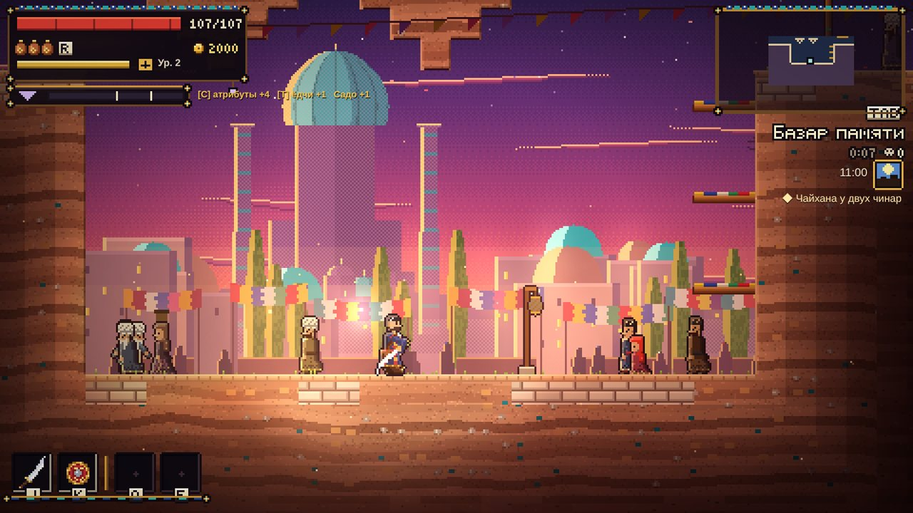
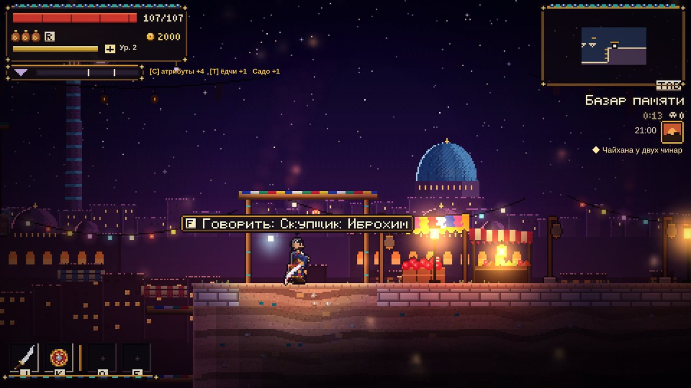
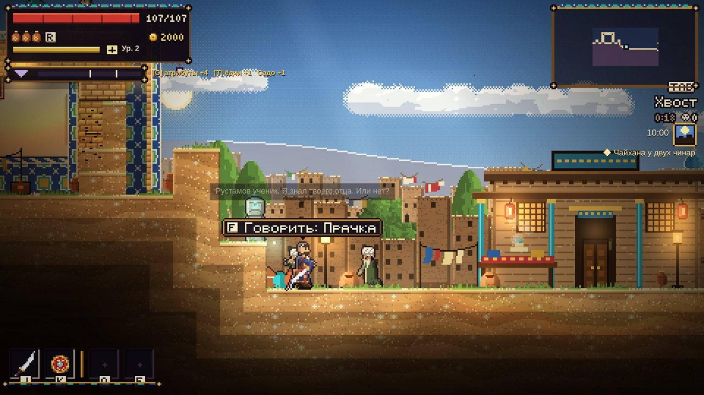
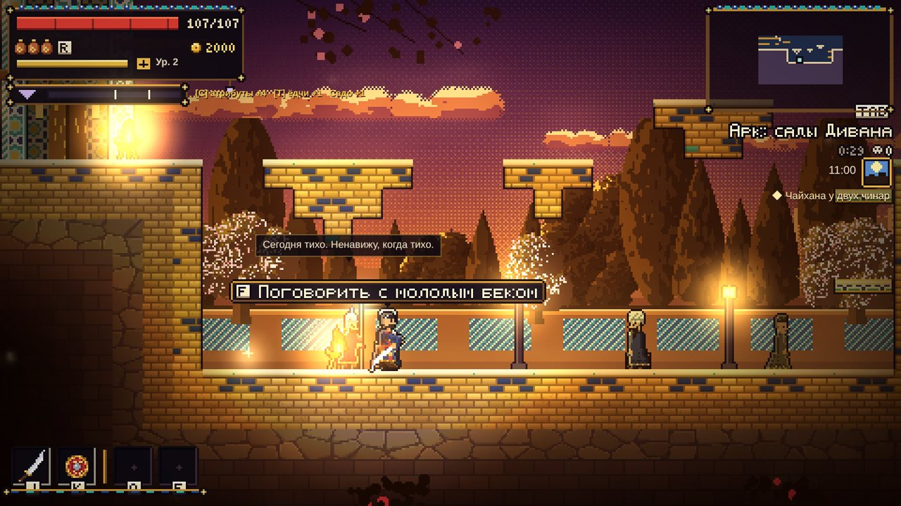
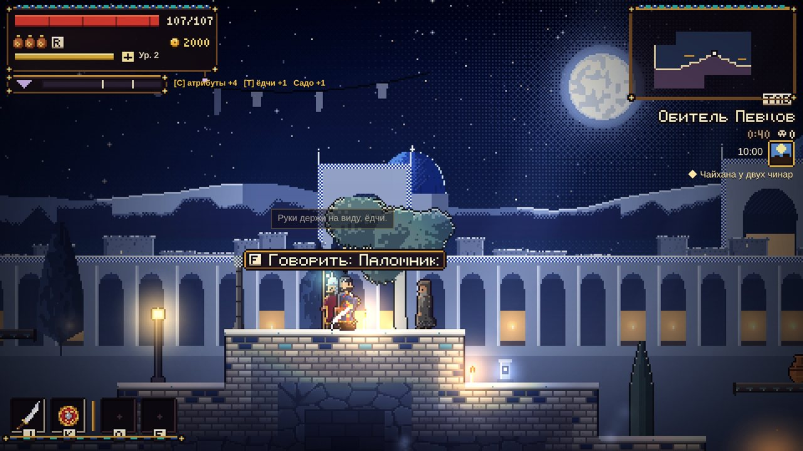
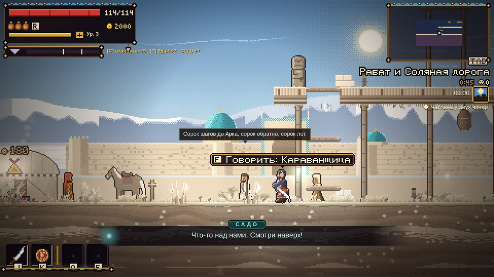
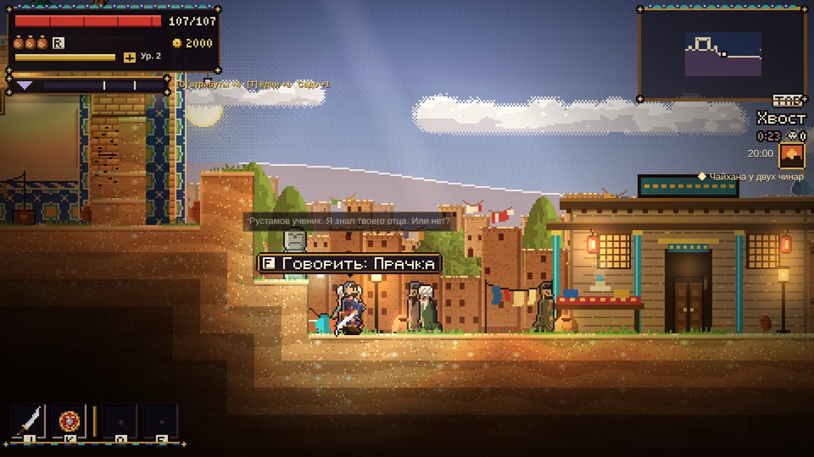
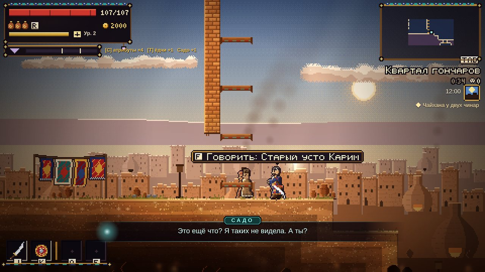
Сутки идут 24 минуты реального времени (одна минута — один час): день, вечер, ночь, рассвет; свет следует за часами. Ночью — свои враги, тайный рынок, контрабандисты и Помнящие, ночная музыка. У ключевых людей расписание: работа, дом, чайхана, молитва. Новолуние (акты) движется только сюжетными вехами.
14 чайхан-привалов. Отдых восстанавливает воду (фляги) и здоровье, переводит время на утро или ночь, возрождает врагов, открывает разговоры спутников у огня, готовку, покупку припасов и доску охоты. Быстрое перемещение бесплатно и только между открытыми чайханами. Смерть возвращает к последней чайхане (зависит от режима). Карта [M] — нарисованный свиток с регионами, чайханами, отметками и туманом над неизведанным.
Толпа подбирается по месту и часу: зазывалы, покупатели, стража Дивана парами, носильщики, дети, нищие, музыканты, Певцы, писари, старики, женщины у колодца, паломники, караванщики; ночью сторожа, контрабандисты, пьяные, фонарщики — всего 25 ролей. На Базаре днём 47 человек, в Арке 41, в Хвосте 33. Люди ходят, патрулируют, стоят группами; проходя мимо, слышишь реплику (пузырь над головой); со многими можно поговорить — их слухи ведут к настоящему контенту. Когда начинается драка, люди разбегаются.
| Атрибут | Что даёт |
|---|---|
| Сила | Урон тяжёлого оружия (посохи, булавы, сабли), проверки силы в мире |
| Ловкость | Урон ножей, сабель, стрелкового; проверки ловкости |
| Стойкость | Здоровье, выносливость, вес брони, сопротивления |
| Память | Сила магии (дутары, тумары-фокусы, приёмы Запретной песни), проверки памяти, ремесло памяти |
Старт: по 3 в каждом и 3 свободных очка. Уровни до 30; за уровень — очко атрибута и очко навыка. Убывающая отдача: полная до 10, 70% на 11–15, 40% на 16–20 (максимум 20). Сброс атрибутов возможен. Оружие масштабируется буквами S/A/B/C/D от атрибутов.
Каждая ветвь — 12 узлов в четырёх ярусах (открываются при 0 / 3 / 6 / 9 очках в ветви), в каждой ключевой узел. Активные узлы дают приёмы для слотов Q / E.
| Ветвь | Суть и узлы |
|---|---|
| Взыскание Hisob-kitob | Бой. Рука взыскателя, Тяжёлый стук, Меткий глаз, Счёт ударов, Кровь за долг, Перехват, Добивание, Два ножа, Залп, Взыскатель, Без остатка; ключ — «Последний стук» |
| Хребет Bardosh | Выживание и тактика. Привычка обхода, Перекат ёдчи, Плотный чапан, Второе дыхание, Блок и ответ, Соль под ногами, Знание улиц, Отвары травницы, Капканы, Хребет Спящего, Вожак; ключ — «Сорок шагов» |
| Запретная песнь Yashirin navo | Магия памяти. Искра, Шёпот, Восковой щит, Забвение, Песня дутара, Чужая память (испить свежего мертвеца — 30 с его свойства), Цена поменьше, Огонь памяти (сжечь тумар — взрыв), Эхо, Голос Колодца, Отзвук Пустоты; ключ — «Запретная песнь» |
Очки Садо приходят из сюжета, а не за уровень. Узлы: Её глаза (крит), «Сзади!», Она вытаскивает тебя, Ровное дыхание / Два сердца, Её свет, Алла, «Держись!», «Тойчок!», «Сестра». До раскрытия правды узлы носят маскирующие имена («Запечатанное воспоминание»), после — честные названия.
Субтитры, которые не останавливают игру; маленький огонёк рядом с Равшаном — ярче в темноте, тускнеет с ростом Пустоты и тянется к спрятанным воспоминаниям; её реплики на решения героя; [B] — приглушить её свет (для скрытности).
Основа — ближний и дальний бой с выносливостью, перекатом (окно неуязвимости), блоком и парированием, удар о землю, двойной прыжок. Удар в спину не заметившему тебя врагу — ×3 (ножами ×4). Главное правило баланса: ни один удар не снимает больше 8% здоровья босса (легендарные приёмы на откате — до 14%). Снижение урона и сопротивления не выше 60%.
| Категория | Сильна в | Вес |
|---|---|---|
| Сабли и клычи | Серии ударов, годятся на всё | средний |
| Посохи и дубины | Оглушение, равновесие, пробивание защиты | тяжёлый |
| Ножи и кинжалы | Кровотечение, удары в спину | лёгкий |
| Щит и булава | Блок, контрудар, защита спутников | тяжёлый |
| Праща, лук, самострел | Дистанция, слабые места, летуны | средний |
| Дутар и бубен | Звук бьёт по толпе, контроль | лёгкий |
| Тумары-фокусы | Сожжение, урон взрывом | лёгкий |
Качество (4 ступени), улучшения +1…+5 у кузнеца Маъруфа (железо → булат → кость Спящего), 10 модов: камни (кровавый рубин, ударный гранат, лазурит Хребта, соль солончака, бирюза) и воск (масляный, белый, воск забвения, чёрный, воск возврата).
Посох Рустама · Золотой клык · Дутар Тураба · Звено Семерых · Нож первого воска · Щит Хумо · Праща Даврона · Коготь Албасты · Клык Ак Барса · Колыбель. У каждого свой приём; выдаются сюжетом и боссами.
Броня в четырёх слотах (голова, тело, пояс, сапоги), классы лёгкий/средний/тяжёлый влияют на перекат. 7 наборов с бонусом за 4 предмета: Ёдчи (+к проверкам Взыскания), Белые одежды Певцов (меньше Пустоты от магии), Золочёная сталь Дивана (равновесие; стража Дивана не трогает), Пепельный плащ Помнящих (скрытность ночью, удары в спину), Караванщика (яд и жара, дешевле дорога), Контрабандиста, Чапан из сна. 32 оберега, два слота: терпения (+1 фляга), счёта, тени, соли, громкого голоса, чужой удачи, стали, ветра, крови, воска, огня, Хребта, молчания, голода, пастуха, кузнеца, стража, бегуна, школяра, скупщика, последнего вздоха, ярости, безмолвия, долга, ясного глаза, камня, вдовы, сна, Певцов, Дивана, ловкача, старика.
Горение, яд, кровотечение, холод (заморозка), оглушение, замедление, воск (замедляет и застывает), забвение. Вода из фляги лечит 35% (3 фляги на старте, до 6).
Ёдчи работает с памятью четырьмя действиями (они встречаются в диалогах, квестах и мире):
| Действие | Что делает |
|---|---|
| Испить | Увидеть чужое воспоминание изнутри — главный инструмент расследований; добавляет Пустоту |
| Взять | Перенести память из человека в воск, в тумар |
| Сжечь | Уничтожить воспоминание (в бою — взрыв тумара) |
| Вселить | Вернуть или посадить память человеку |
Пустота (0–100) — скрытая цена: растёт от испития, чужих тумаров, магии, смерти (по режиму сложности) и тёмных решений; в выборе её цена не показывается. Падает от возвращённых воспоминаний Равшана (−6 каждое), колыбельной Садо в чайхане, горького чая, сумаляка. Высокая Пустота искажает речь Садо, на 100 — концовка «Пустой».
Потерянные воспоминания Равшана — 21 тумар, спрятанные по регионам (первый снег, поющая петля, абрикосы через стену, отцовский дутар, вторая подушка…). Каждый снижает Пустоту, рассказывает его прошлое и добавляет улику о забытой девочке.
| Семья | Примеры типов |
|---|---|
| Пустые | Пустой бродяга, Пустой должник, Толпа Пустых (окружает), Пустой носильщик (бросает камни), падальщик |
| Стража Певцов | Страж Колодца (глухой), факельщик десятины, страж в белой шапке (щит), послушник, Хорист (нота по кругу + Пустота), Наставник (лечит своих), Мёртвый Певец |
| Наёмники Дивана | Наёмник, лучник, позолоченный копейщик, тяжёлый наёмник, Щитоносец (блок спереди), Ловчий с сетью, Капитан (усиливает группу), дворцовый тигр |
| Контрабандисты и воры | Вор тумаров (заходит со спины), торговец памятью и его кобры, сон в бутылке, Метатель масла (огонь на земле), Скупщик краденого (убегает с добычей) |
| Твари кяризов | Слепой угорь, пиявка, Утопленники, сточная крыса, дочь Албасты, глиняный ползун, светляки-плакальщики |
| Соль и песок | Соляной шакал, тень Соляной дороги, соляной идол, соляной и пепельный скорпионы, песчаный червь, песчаный гуль, соляная змея, каторжник, стервятник, ворон Башни |
| Старый Ёдгор / Помнящие | Погребённый стражник, гуль, страж Семерых, тень основателя, Маска (быстрые кинжалы), Сжигатель (огонь) |
| Существа Хребта | Ледяной див, дух горного козла, призрак беркута, детёныш снежного барса, каменный страж позвонка |
| Сон | Падшая пери, див-копейщик, помнящая стена, ходячее воспоминание (копирует твой приём), утопленный гость, отродье кошмара, тигр из детского сна, уголь Сердца, тень Года Песка, пламя кошмара |
Элиты — обычный тип + 1–2 модификатора (в НГ+ всегда 2, ещё два новых): Горящий, Теневой (появляется за спиной), Щитоносный (щит восстанавливается за 4 с), Вожак (усиливает группу), Пустой (удары дают Пустоту), Мстительный (взрывается после смерти), Вселённый (отвечает твоим же приёмом); в НГ+ — Стремительный и Заговорённый. Групповое поведение: одновременно замах начинают не больше двух врагов на обычной сложности (один на лёгкой, три на тяжёлой) — честно, но не по очереди. Диван и Помнящие дерутся между собой.
| Мини-босс | Регион | Суть |
|---|---|---|
| Тандырщик | Квартал гончаров | Пустой гончар с раскалённой лопатой; печи вокруг извергают огонь в отмеченных местах |
| Аукционист | Базар, ночью | Дерётся молотком; «продаёт с торгов» твой приём — он гаснет на 10 с; сильный удар во время торга срывает продажу |
| Капитан плюмажа | Арк | Парирует всё спереди; если отбить его выпад, защита открывается (+30% урона) |
| Мать стервятников | Башня Молчания | Воздушный бой: призывает стервятников; праща, лук и магия бьют её сильнее клинка |
| Глиняный голем | Кяризы | Дважды рассыпается и собирается вновь — если не полить глину водой из фляги |
| Надсмотрщик | Соляные шахты | Кнут по линии; прикрывается каторжниками-заложниками — сквозь них не ударить |
| Знаменосец Помнящих | Старый Ёдгор | Пока стоит знамя, он и его люди неуязвимы — сначала срубить знамя |
| Невеста | Утонувшая свадьба | Танцует; атаки ложатся на долю барабана: шаги, вращение, бросок воды |
| Босс | Где | Суть |
|---|---|---|
| Обжора | Хранилище Певцов (пролог) | Груда сросшихся Пустых; таран, хлыст, обвал, вдох тумаров; во 2-й фазе делится |
| Ялмагыз Кампир | Башня Молчания | Семиглавая ведьма: укусы голов, плевок ядом, метла, руны, вороны; головы сбиваются |
| Баходир, Позолоченный Пёс | Двор Пса, Арк | Дуэль: глефа с задержкой замаха, щит, захват, монеты, гончие; самый «соулсовый» бой |
| Безмолвный Хор | Зал Хора, Обитель | Кольца тишины, волна, солист «держит ноту»; удары дают Пустоту |
| Албасты | Большая цистерна | Прилив, ползок, утягивание под воду |
| Ак Барс | Святилище на Холке | Прыжки, взмахи лапой, ледяные трещины и сосульки, духи-бегуны |
| Аждахо | Гнездо Кошмара (сон) | Летающий дракон: пике, огненное дыхание, метеоры, обстрел |
| Семеро | Дно Колодца | Основатели, спорящие о цене; новая механика без приёмов Кампир |
| Ширин, голос Колодца | Финал арки Певцов | Финальный босс фракции |
| Хумо, золотая птица Дивана | Финал арки Дивана | Своя птица-долговая книга |
| Ойдин, Помнящая | Финал арки Помнящих | Бьёт воспоминаниями самого Равшана |
У всех боссов есть телеграфы атак (метки на полу, вспышки), фазы с новыми приёмами и честные окна для удара. В НГ+ каждый босс получает ещё один именной приём.
| Фракция | Глава | Арка из 6 квестов |
|---|---|---|
| Певцы Колодца | Устоз Ширин | Пропавший воск · Сосчитано дважды · Хор, который не поёт · Проверка верности · Колодец пуст · Великая десятина |
| Диван | Тилла-бек | Беглый должник · Чужая свадьба · Соль и цепи · Погреб тысячи детств · Наследники · Песнь цепи |
| Помнящие | Ойдин | Возвращение · Склад в кяризах · Беглецы · Цена правды · Маска · Пробуждение |
Репутация у каждой фракции (и у Хвоста, Рабата) от −100 до +100, видна только как порог: Враг, Недоверие, Нейтрально, Свой (открывает работу и интенданта), Доверенный (финал арки). Можно вести двойную игру — работать на две стороны, пока не поймают. Журнал [N] показывает дела по фракциям и положение.
Тилла добывается трудно: обычный враг даёт 0–3, элита 10–25, мини-босс 60–100, босс 150–250, квест 30–300. Торговцы — живые люди в свои часы: оружейник Шавкат, кузнец Маъруф, травница Зебо, скупщик Иброхим (покупает за 30%, у него можно выкупить проданное), Фаррух (тумары), контрабандист Сайфи (отмычки, проход), картограф Хайдар, интенданты фракций. Цена зависит от отношения к тебе (±30%); можно торговаться (раз за визит) или стянуть с прилавка.
Враги видят только перед собой, с учётом света и шума; сначала копится подозрение («?» → «!»), тревога передаётся соседям. Удар в спину — ×3, ножом ×4. [B] приглушает свет Садо. Преступления: кража у торговцев, взлом сундуков ночью, убийство небоевых людей. Свидетель → фракция района: −15 и розыск (стража приходит за тобой). Как очиститься: штраф (Диван, Рабат, Помнящие), покаяние и десятина (Певцы), работа (Хвост) или вселить память свидетелю на месте. Спутники реагируют на преступления по-своему.
Партия — до четырёх: Равшан + Алп, Наргиза, Сурайё. По решению автора спутники делают бой сложнее, а не легче.
| Спутник | Арка | Исходы |
|---|---|---|
| Алп | «Имя»: бывший капитан Дивана, Пустой. Шрамы, тумары, капитан Арслон у ворот Арка, сцена в Сердце, «Долг» | Вспоминает и остаётся · остаётся пустым · уходит капитаном в Диван · гибнет |
| Наргиза | «Бекзод»: ученица Певцов, слышит Спящего. Голос в колодце, долговая книга, тумар брата, «Вопрос» на Хребте, «Песня» в финале | Верит голосу (ключ к Сказанию) · возвращается к Устоз · дар выжжен — уходит |
| Сурайё | «Плеяды» (романтика): последний мираб Хвоста. Сухой арык, Водяной долг, Крыша (признание у огня), Чужое лицо, Тумар на двоих, Плеяды | Вместе и помнит · вместе, но угасает · шлюзы (спасена/погибла) · мираб Дивана · дружба · ушла |
| Узел Алп — Наргиза | Брата Наргизы продал Алп. Сказать / дать узнать самой / скрыть | Прощение · перемирие · разрыв · месть |
Лагерь: после каждого отдыха в чайхане — сцена у огня (и строка «Посидеть у огня»): 64 сцены о прошедшем дне, о решениях героя и друг о друге; открываются по одобрению, шагу арки, региону и выборам, не повторяются. У каждого спутника свой слайд эпилога.
Главная линия (пролог + 3 акта), три фракционные арки по 6 квестов, личные арки спутников и побочные истории. Правило побочек: загадка и поворот, два и больше пути, нет чистого хорошего исхода, люди возвращаются позже, у многих — слайд эпилога.
Синий волк (камео: Шерзод и Азамат, лёгкая комедия) · Чай на троих · Колыбельная для Пустого · Счастье Фарруха · Слепой картограф · Ошиқ за всё · Пёс без хозяина · Абрикосовый сад · Ключ от склада · Дети в стене · Соляная невеста · Беглый ёдчи · Двенадцатая ступень · Небесный торговец · Детский хор · Голова за долг · Год Песка · Последняя песня (+ три побочки внутри актов).
Расследование через «испить», проверки с обходными путями (ни один билд не заперт), 4 концовки без чистого исхода, люди возвращаются позже с новыми репликами, свой слайд эпилога; квесты связаны друг с другом.
| Квест | Где | Завязка |
|---|---|---|
| Голос поминутно | Базар | Торговец сдаёт за занавеской голос «утонувшей» жены — три тилла минута |
| Писари забывают | Базар | Кто-то выпевает писарей откупщика, скупившего долговые книги Хвоста |
| Одна ночь на всю улицу | Хвост | Весь переулок одними словами «помнит», куда ушёл человек одиннадцать лет назад |
| Две вдовы и одна чаша | Хвост, Гончары | Гончар вплавляет память покойных в поминальные чаши |
| Чужая совесть | Арк | Конюх-«носильщик» носит в себе преступление молодого бека |
| Лёгкая десятина | Обитель | Стыд, отданный послушницей, держат на полке под Башней и шантажируют им |
| Тот же караван | Рабат | Караван каждую осень приходит с людьми, которые не стареют |
| Седьмой штрек | Соляные шахты | Розовая соль платит «три за один» и забирает столько же |
| Тихая вода | Кяризы | Плот к утонувшим — за плату памятью о них |
| Накануне праздника | Проглоченные улицы | Женщину двадцать лет держат в одном вечере перед Праздником воды |
Упрощённая игра в кости-альчики: стороны Чикка 3, Олчи 2, Тава 1, Пукка 0; комбинации +2/+5/+10/+20, все четыре стороны +6; один переброс, три пустых — перебор; три раунда. 30 особых альчиков (выигрываются, покупаются, находятся — 17 спрятаны в мире), 12 соперников со своим стилем, турнир на Базаре.
Доска контрактов в больших чайханах: 10 охот на элитных тварей. Следы можно испить, чтобы узнать слабость (−25% здоровья цели). Три контракта с поворотом: «чудовище» можно пощадить.
27 случайных встреч по региону и часу (+6 моментов на пути): ограбление каравана, потерявшийся ребёнок, подозрительный торговец, драка в пряном ряду, свадебная процессия, карманник, уличный аукцион первого поцелуя, очередь за водой, похороны без печати, дуэль в розовом саду… В хабах одновременно до трёх. Каждое — маленький выбор с последствием, раз за игру.
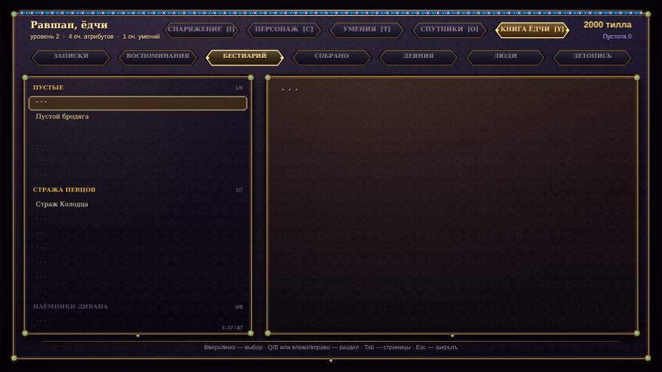
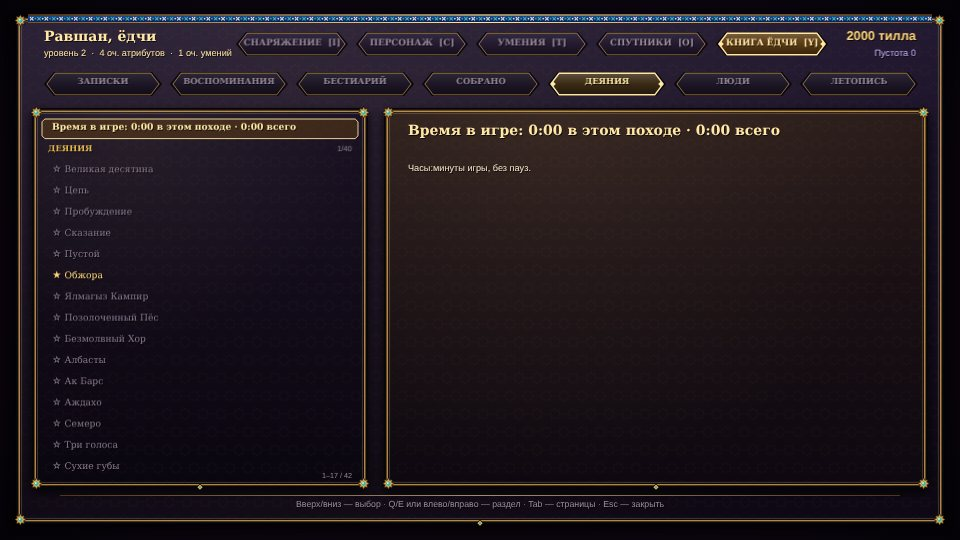
Слева сверху — здоровье, выносливость, Пустота, фляги, тилла; под ними портреты спутников с откатом приказа. Справа — мини-карта, название района, время суток, текущая цель (одной строкой). Снизу — оружие и два слота приёмов. Режим «чистого экрана» показывает HUD только в бою.
| Действие | Клавиатура | Геймпад |
|---|---|---|
| Движение / прыжок | A D, стрелки / Пробел | Стик / A |
| Основное / второе оружие | J, ЛКМ / K, ПКМ | X / Y |
| Перекат | Shift, L | B |
| Приёмы | Q / E | LT / RT |
| Испить воды / взаимодействие | R / F | LB / RB |
| Карта / пауза | Tab, M / Esc, P | Select / Start |
| Инвентарь · Персонаж · Навыки · Спутники · Книга | I · C · T · O · Y | — |
| Журнал · Стойка · Приказы · Крюк · Свет Садо | N · V · 1/2/3 · G · B | — |
| Сброс графики · Во весь экран | F9 · F11 | — |
«Параметры»: язык; экран и графика (полный экран, разрешение, вертикальная синхронизация, частота кадров, масштабирование, пресет, лучи, зерно, яркость, сброс); управление, текст, экран — переназначение клавиатуры и геймпада (свои и движковые клавиши, со сбросом), скорость текста, размер субтитров, чистый экран, подсказки. Движковые «Настройки»: музыка, звуки, тряска, вспышки, мини-карта. Защита от чёрного экрана откатывает настройки, после которых кадр пустой.
| Режим | Смерть |
|---|---|
| Путник | Лёгко / Обычно / Тяжело. Начинаешь землю сначала, песня забирает одно воспоминание; снаряжение остаётся, половина тиллы пропадает |
| Клятва | Всегда тяжело. Земля встречает такой же, какой была; песня берёт больше; тилла ждёт там, где ты пал (вернуться можно один раз) |
| Без возврата | Смерть заканчивает поход |
40 достижений: пять концовок; восемь боссов и три голоса фракций; босс без единого глотка воды; все мини-боссы; лучшие исходы Алпа, Наргизы, Сурайё и узла; три фракционные арки; 20 побочных историй; премьера «Синего волка»; все охоты; «ни одного Сожжения»; «чистые руки» (ни одного испития); лёгкий шаг (Пустота < 30); с края обратно; чемпион Ошиқ; все альчики; вся библиотека; все воспоминания («Тойчок»); весь бестиарий; десять вещей своими руками; первый тумар; 20-й уровень; НГ+; десять часов в городе.
Новая игра+ после любой концовки: переносятся уровень, навыки, снаряжение и бестиарий (сюжетные ключи — нет); враги ×1,4; у каждой элиты два модификатора, есть два новых; каждый босс получает именной приём; у Садо свои реплики для тех, кто уже знает дорогу.
Катсцены: в начале каждого акта — три нарисованных слайда с подписью о том, как изменился город.
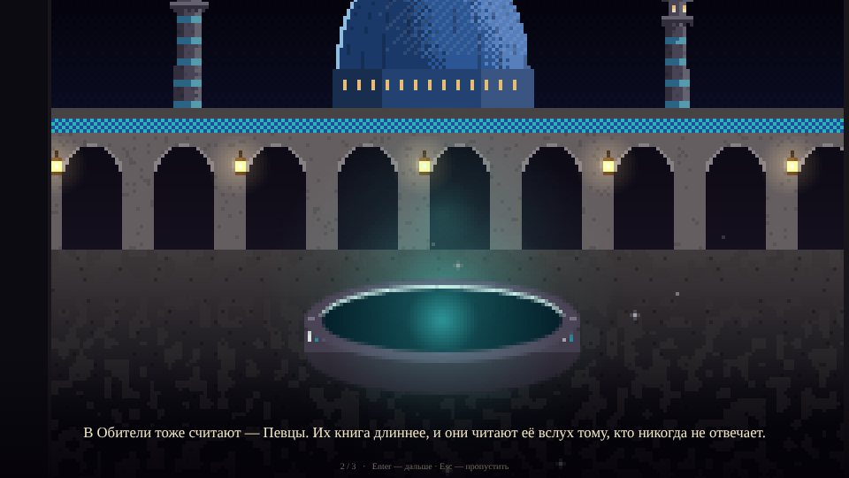
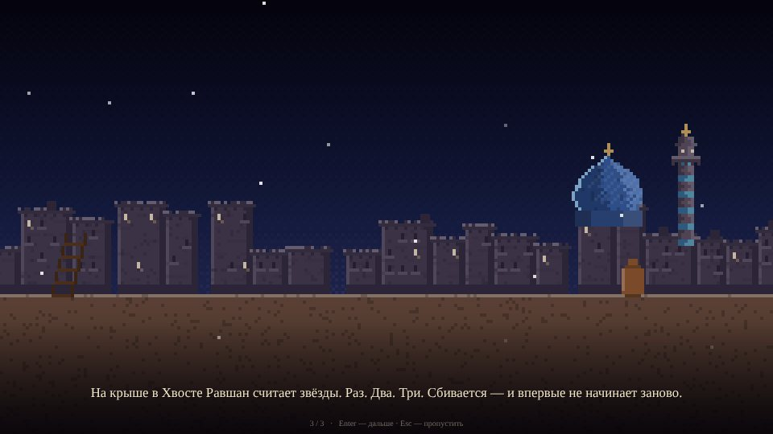
Музыка процедурная, своя тема у каждого региона и босса (лады бахти/баяти, хиджаз, фригийский; дутар, най, кобыз, дойра, гонг, хор), ночные версии на поверхности и в горах, эпилог — своя тема.
build.py накладывает точечные патчи.yodgor2/src/layer/NN_*.js, склеиваемые в один модуль по имени: сюжет (50, 70–72), персонаж и предметы (62–68), боссы (65*), фракции (75–79), открытый мир (80–85), спутники (86–88*), контент (89*), эпилог и катсцены (99*).English|Русский|O'zbekcha, ровно три части, ≤ 220 символов; линтер в сборке. Язык меняется на лету.python3 build.py → dist/standalone.html (≈5,7 МБ, один файл). Exe — лаунчер на Go + WebView2 (≈12 МБ), с защитой от чёрного экрана.journey.js), бои с боссами, мини-боссы, регионы, спутники, побочки, квесты, ремёсла, события, толпа, настройки, производительность.Все десять этапов дорожной карты (глава 26 ГДД) реализованы как системы. Дальше — замер, баланс и вычитка.
| Что | Состояние |
|---|---|
| Замер 10 часов | Не сделан. Нужен живой проход; счётчик есть в Книге ёдчи → Деяния |
| Финальный баланс | После замера. Бот на боссах ещё пропускает 2–9 ударов за бой |
| Вычитка RU/UZ | Нужна автору: всё, что добавлено на этапах 7b–10 и в новых квестах |
| Концовки новых квестов | По две на квест пройдены тестом, остальные собраны и проверены линтером |
| Исходы спутников | Присоединение и все 64 сцены лагеря проверены тестом; каждый исход арок целиком тестом не пройден |
| Упрощения против ГДД | «Вселённая» элита отвечает снарядом, а не копирует приём; приём боссов в НГ+ — общий шаблон с именем и цветом; размер текста меняется только у субтитров; засады врагов (потолок, вода) не сделаны |
| «Отцовская десятина» | По решению автора не делается |